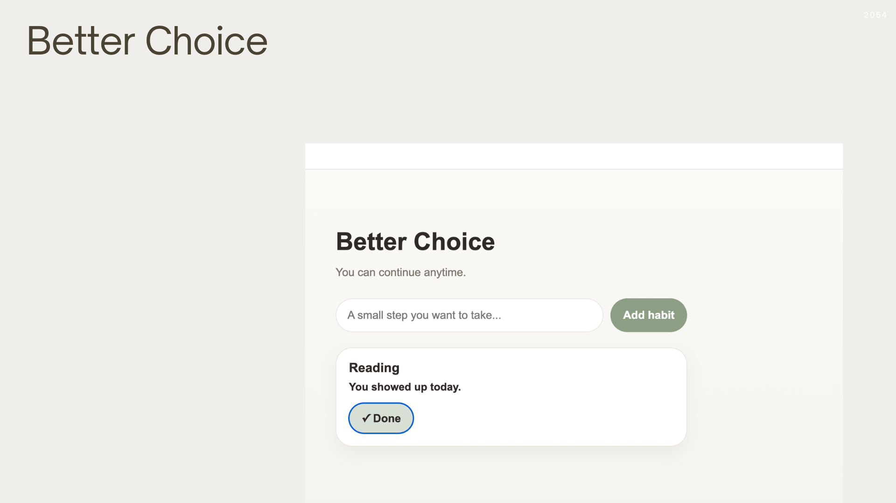
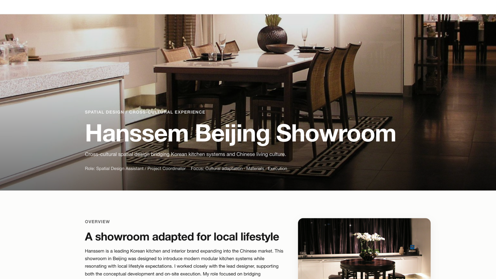
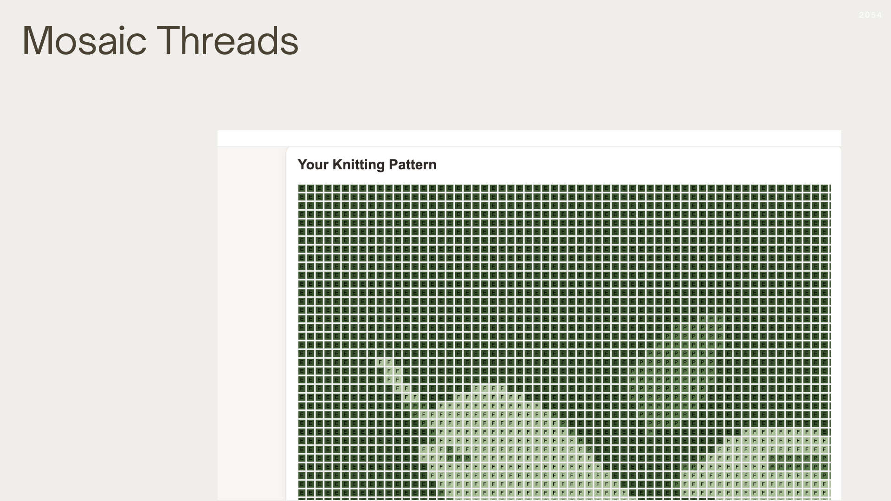
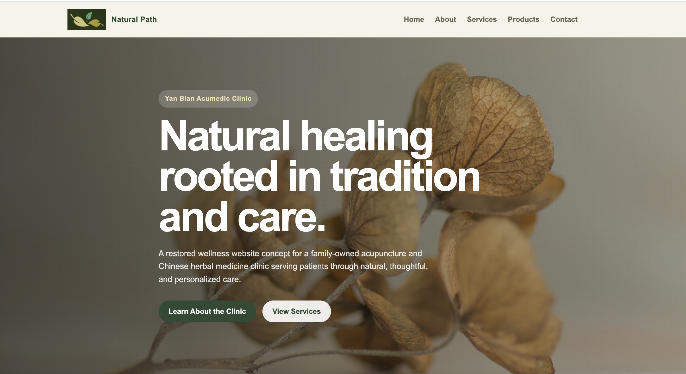

Better Choice
A habit companion designed to support consistency without pressure, streaks, or guilt-driven systems — exploring how digital products can encourage positive behavior while respecting the user's emotional pace.
View case study →With a foundation in spatial and interior design, I bring a structural, systems-level lens to digital UX — delivering work that's strategic, human-centered, and built to perform.
From cross-cultural showrooms to habit-forming apps, I translate real needs into practical digital systems that feel calm, clear, and grounded.

My portfolio spans digital UX and cross-cultural spatial design — reflecting how I approach clarity, strategy, and human-centered outcomes across different contexts and scales.

Featured Project
A cross-cultural showroom project translating Korean design systems into Chinese spatial and lifestyle contexts — bridging design, materials, and on-site execution across two distinct cultural frameworks.
View case study →A habit companion designed to support consistency without pressure, streaks, or guilt-driven systems — exploring how digital products can encourage positive behavior while respecting the user's emotional pace.
View case study →
A web tool that transforms personal images into simplified knitting patterns using curated yarn-inspired color palettes — balancing visual meaning with practical usability for real-world making.

A calm, trustworthy clinic website designed to reduce first-visit uncertainty and simplify appointment requests — built around responsible healthcare language and real operational constraints.
I turn complicated or uncertain experiences into flows that feel calmer and easier to navigate — whether in physical space or on screen.
I focus on solutions that are realistic to use and maintain — not just visually appealing concepts, but systems that hold up in the real world.
I'm drawn to products and services that support real people in creative, personal, or care-focused contexts — where design decisions genuinely matter.
My path into UX started in physical space — designing interiors and cross-cultural showrooms where every decision had real, tangible consequences. That background taught me to think in systems, consider context deeply, and design for how people actually move through an experience.
Today I bring that same structural thinking to digital products. I'm interested in how interfaces shape behavior and emotion — not just whether they function, but how they make people feel. My work tends to sit at the intersection of clarity, creativity, and emotional comfort, especially in contexts where people feel uncertainty or pressure.